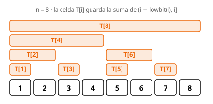

Fenwick Tree (BIT)#
Metadatos
Tipo: Estructura · Nivel: Avanzado · Dificultad: 4.0 · Complejidad: O(log n) por operación
Requisitos: Arrays 🏗️, Prefix sums 🏗️
Relacionado: Segment tree 🏗️
El árbol de Fenwick (o Binary Indexed Tree) mantiene las sumas de prefijos de un array permitiendo actualizaciones puntuales y consultas de rango, ambas en O(log n). Es la estructura ideal cuando el array cambia y necesitamos sumas de rangos muchas veces.

T[i] guarda la suma de un bloque que termina en la
posición i y cuyo tamaño es el bit menos significativo de i.Idea#
Un array de sumas de prefijos responde consultas en O(1), pero cambiar un solo elemento obliga a rehacer O(n) prefijos. El árbol de Fenwick reparte la información en bloques de distintos tamaños para que tanto actualizar como consultar toquen solo O(log n) bloques.
Internamente los índices son 1-based (la posición 0-based p del usuario se guarda en
la posición interna p + 1). La celda T[i] almacena la suma del rango medio-abierto
(i − lowbit(i), i], donde lowbit(i) es el bit menos significativo de i:
lowbit(i) = i & -i. En complemento a dos,-iinvierte todos los bits y suma 1, así quei & -ideja solo el bit encendido más bajo. Ese valor es a la vez el tamaño del bloque que cubreT[i]y el salto al recorrer el árbol.- Los índices impares (
lowbit = 1) cubren un solo elemento; los que son potencia de dos cubren un bloque grande (T[8]cubre las 8 posiciones).
update y query recorren el árbol en direcciones opuestas:
update(index, delta)sube: desde la posición, repiteindex += index & -index. Cada salto lleva a la siguiente celda cuyo bloque contiene esa posición, así que actualiza todos los bloques afectados (a lo sumo O(log n)).query(index)baja: repiteindex -= index & -index. Quitar el bit más bajo salta al bloque anterior; los bloques visitados son disjuntos y embaldosan exactamente[0, index). Como cada paso apaga un bit, hay a lo sumo O(log n) pasos.
Las consultas son medio-abiertas: query(index) devuelve la suma de [0, index).
La suma de un rango es la resta de dos prefijos: query_range(l, r) = query(r) − query(l).
Ejemplo#
Partimos de un array de 5 ceros y aplicamos las operaciones del test:
update(0, 3) y luego update(2, 5). El array lógico queda a = [3, 0, 5, 0, 0].
Tras las dos actualizaciones, las celdas internas (1-based) valen:
| Celda | Cubre (posiciones 1-based) | Valor |
|---|---|---|
T[1] |
{1} |
3 |
T[2] |
{1, 2} |
3 |
T[3] |
{3} |
5 |
T[4] |
{1, 2, 3, 4} |
8 |
T[5] |
{5} |
0 |
Ahora query(3) (suma de [0, 3)) baja desde index = 3: suma T[3] = 5, salta a
3 − 1 = 2, suma T[2] = 3 y salta a 0. Total 5 + 3 = 8. Fíjate en que los bloques
(2, 3] y (0, 2] cubren justo las tres primeras posiciones sin solaparse.
Del mismo modo query(5) suma T[5] = 0 y T[4] = 8, dando 8. Por tanto
query_range(0, 3) = 8 y query_range(0, 5) = 8, la salida esperada del ejemplo.
Código#
/**
* Fenwick Tree (Binary Indexed Tree).
*
* A structure for prefix sums with point updates: it stores an array and
* answers range-sum queries and single-element updates, both in O(log n). Ideal
* when the array keeps changing and range sums are needed many times.
*
* The public API is 0-based, but the tree is stored 1-based: cell `i` (1..n)
* holds the sum of the half-open block (i - lowbit(i), i], where lowbit is the
* lowest set bit of `i`. That block size is what lets both operations move in
* O(log n) steps.
*
* FenwickTree(n) build an empty tree of n zeros O(n)
* update(index, delta) add `delta` at position `index` O(log n)
* query(index) -> prefix sum of [0, index) O(log n)
* query_range(l, r) -> sum of [l, r) O(log n)
*/
#include <vector>
using namespace std;
struct FenwickTree {
int n;
vector<int> tree; // 1-based cell i (stored at tree[i-1]) covers (i-lowbit(i), i]
// Create a Fenwick tree of `n` elements, all zero.
FenwickTree(int n) : n(n), tree(n) {}
// Add `delta` to the element at `index` (0-based).
void update(int index, int delta) {
// `index++` converts to 1-based, then we walk UP: `index & -index`
// isolates the lowest set bit, and adding it jumps to the next cell
// whose block also contains this position (at most O(log n) cells).
for (index++; index <= n; index += index & -index)
tree[index - 1] += delta;
}
// Return the prefix sum of [0, index).
int query(int index) {
// A 0-based exclusive bound equals the 1-based element count, so no +1.
// Walk DOWN: subtracting the lowest set bit jumps to the block just
// before this one; the visited blocks tile [0, index) with no overlap.
int acc = 0;
for (; index > 0; index -= index & -index)
acc += tree[index - 1];
return acc;
}
// Return the sum of the half-open range [l, r).
int query_range(int l, int r) { return query(r) - query(l); }
};
#include <vector>
using namespace std;
struct FenwickTree {
int n;
vector<int> tree;
FenwickTree(int n) : n(n), tree(n) {}
void update(int index, int delta) {
for (index++; index <= n; index += index & -index)
tree[index - 1] += delta;
}
int query(int index) {
int acc = 0;
for (; index > 0; index -= index & -index)
acc += tree[index - 1];
return acc;
}
int query_range(int l, int r) { return query(r) - query(l); }
};
#include <vector>
using namespace std;
struct FenwickTree {
int n;
vector<int> tree;
FenwickTree(int n) : n(n), tree(n) {}
void update(int index, int delta) {
for (index++; index <= n; index += index & -index)
tree[index - 1] += delta;
}
int query(int index) {
int acc = 0;
for (; index > 0; index -= index & -index)
acc += tree[index - 1];
return acc;
}
int query_range(int l, int r) { return query(r) - query(l); }
};
"""Fenwick Tree (Binary Indexed Tree).
A structure for **prefix sums with point updates**: it stores an array and
answers range-sum queries and single-element updates, both in O(log n). Ideal
when the array keeps changing and range sums are needed many times.
The public API is 0-based, but the tree is stored 1-based: cell ``i`` (1..n)
holds the sum of the half-open block ``(i - lowbit(i), i]``, where ``lowbit`` is
the lowest set bit of ``i``. That block size is what lets both operations move
in O(log n) steps.
build: O(n) · update: O(log n) · query: O(log n) · space: O(n)
"""
class FenwickTree:
def __init__(self, n: int) -> None:
"""Create a Fenwick tree of ``n`` elements, all zero.
Args:
n (int): number of elements.
"""
self.n: int = n
self.tree: list[int] = [0] * n
def update(self, index: int, delta: int) -> None:
"""Add ``delta`` to the element at ``index``.
Args:
index (int): 0-based position to update.
delta (int): amount to add.
"""
index += 1 # switch to 1-based indexing
while index <= self.n:
self.tree[index - 1] += delta
# `index & -index` isolates the lowest set bit; adding it walks UP
# to the next cell whose block also contains this position.
index += index & -index
def query(self, index: int) -> int:
"""Prefix sum of the half-open range ``[0, index)``.
Args:
index (int): exclusive upper bound.
Returns:
int: sum of the elements in ``[0, index)``.
"""
# A 0-based exclusive bound equals the 1-based element count, so no +1.
acc: int = 0
while index > 0:
acc += self.tree[index - 1]
# Subtract the lowest set bit to walk DOWN to the previous block;
# the visited blocks tile [0, index) with no overlap.
index -= index & -index
return acc
def query_range(self, l: int, r: int) -> int:
"""Sum of the half-open range ``[l, r)``.
Args:
l (int): inclusive lower bound.
r (int): exclusive upper bound.
Returns:
int: sum of the elements in ``[l, r)``.
"""
return self.query(r) - self.query(l)
class FenwickTree:
def __init__(self, n: int) -> None:
self.n: int = n
self.tree: list[int] = [0] * n
def update(self, index: int, delta: int) -> None:
index += 1
while index <= self.n:
self.tree[index - 1] += delta
index += index & -index
def query(self, index: int) -> int:
acc: int = 0
while index > 0:
acc += self.tree[index - 1]
index -= index & -index
return acc
def query_range(self, l: int, r: int) -> int:
return self.query(r) - self.query(l)
class FenwickTree:
def __init__(self, e):
self.n = e
self.tree = [0] * e
def update(self, c, b):
c += 1
while c <= self.n:
self.tree[c - 1] += b
c += c & -c
def query(self, c):
a = 0
while c > 0:
a += self.tree[c - 1]
c -= c & -c
return a
def query_range(self, d, f):
return self.query(f) - self.query(d)
Complejidad#
| Operación | Complejidad | Motivo |
|---|---|---|
| Construcción | O(n) | reservar el vector de n ceros |
update |
O(log n) | sube saltando de bloque en bloque, uno por bit |
query |
O(log n) | baja sumando bloques disjuntos, uno por bit encendido |
| Memoria | O(n) | una celda por elemento |
Cuándo usarlo#
- Array que cambia + muchas sumas de rango → árbol de Fenwick. Es el caso donde brilla: ambas operaciones en O(log n) con muy poco código y una constante pequeña.
Truco
Para actualizaciones de rango con consultas puntuales, aplica el Fenwick sobre el
array de diferencias: update(l, +v) y update(r, −v) suman v a todo [l, r).
Cuándo NO usarlo#
- Array estático (nunca cambia) → un simple array de sumas de prefijos precalculado responde en O(1) y es más sencillo; no necesitas Fenwick.
- Operaciones más generales (máximo/mínimo de rango, asignaciones de rango, búsquedas tipo lower bound) → un segment tree es más flexible, a costa de más código. El Fenwick es su versión ligera para sumas.
Errores comunes#
- Confundir 0-based (interfaz pública) con 1-based (interior). El
index++al inicio deupdatehace esa conversión; no lo dupliques. - Olvidar que las consultas son medio-abiertas:
query_range(l, r)no incluyer. Para la suma inclusiva de[l, r]usaquery_range(l, r + 1). - Dimensionar mal el árbol: el bucle de
updateusa la condiciónindex <= n, así que el vector debe tener sitio para lasnposiciones 1-based.
Ejercicios#
| Nombre | Dificultad | Enlace |
|---|---|---|
| fenwick | 4.0 | Kattis |
| supercomputer | 2.7 | Kattis |